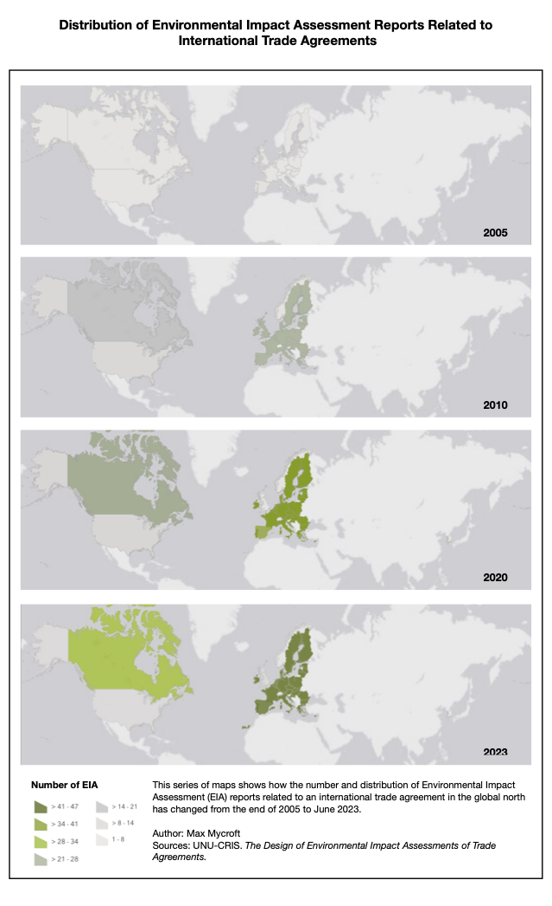
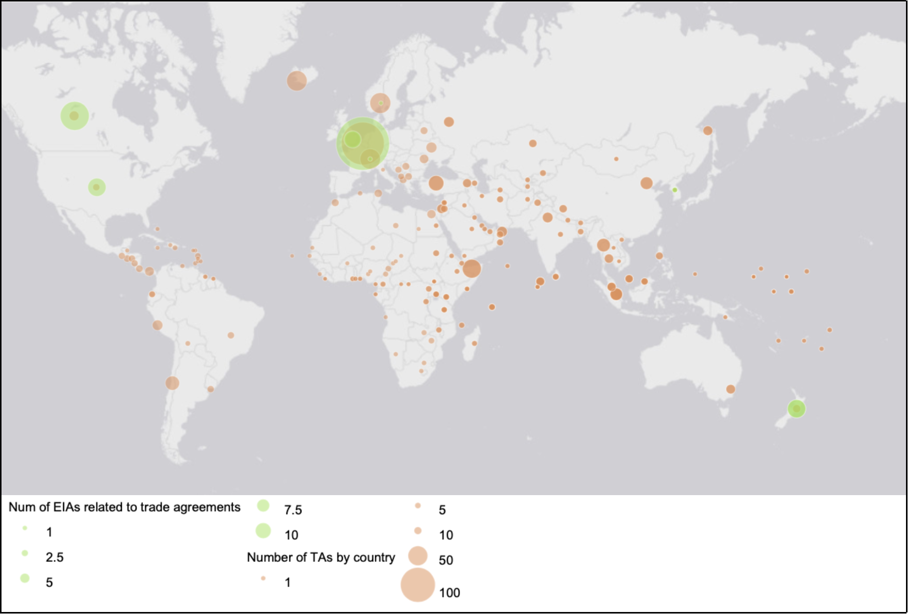
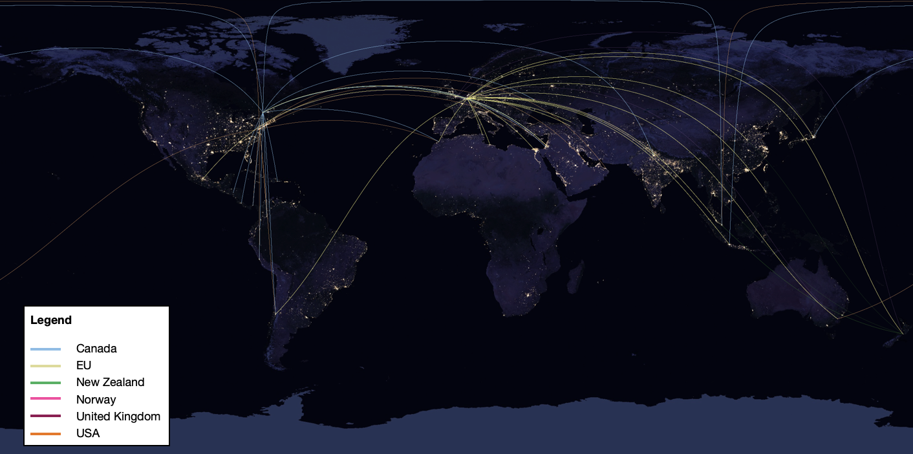
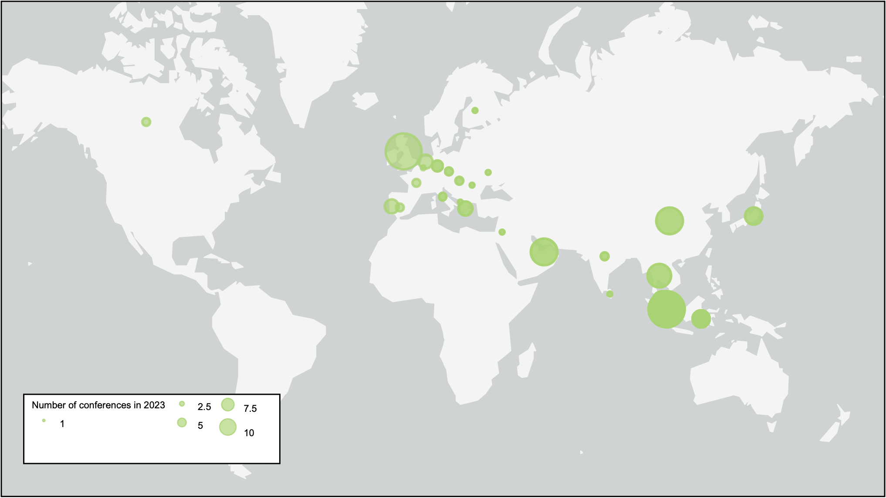

EIA in International Trade Agreements
Python, Web Scraping, ArcGIS | United Nations University - CRIS
During my research internship at the United Nations University - CRRIS, I worked on a wider project to
understand the design and use of Environmental Impact Assessment (EIA) in the context of international
Trade. One aspect of this project was investigating in which countries trade impact assessment
is carried out for trade agreements and in support of this research I produced the
above maps in ArcGIS.
Given the number of trade agreements each country is involved in varies, I also mapped the number of trade agreements notified to the World Trade Organisation that each country is involved in (as of June 2023) and the number of EIA reports produced by each country for various trade agreements. These data were produced by my team and I over several months of research.
To better understand which countries are currently involved in trade agreements that are assosciated with EIA, I then produced a 'connection map' with various coloured arcs showing partner countries.
To further the research beyond which countries are actively involved in EIA, I investigated the geographical distribution of academic discourse of the sustainability-trade relationship. The main challenge in this aspect of the project was in data collection. To solve this, I developed a basic web scraping program to scrape an online database with calls for papers for 2023 conferences using the keywords 'trade', 'sustainable development' and 'environment'. These data were then geocoded and outputted to a csv file to be used in ArcGIS.

Given the number of trade agreements each country is involved in varies, I also mapped the number of trade agreements notified to the World Trade Organisation that each country is involved in (as of June 2023) and the number of EIA reports produced by each country for various trade agreements. These data were produced by my team and I over several months of research.

To better understand which countries are currently involved in trade agreements that are assosciated with EIA, I then produced a 'connection map' with various coloured arcs showing partner countries.

To further the research beyond which countries are actively involved in EIA, I investigated the geographical distribution of academic discourse of the sustainability-trade relationship. The main challenge in this aspect of the project was in data collection. To solve this, I developed a basic web scraping program to scrape an online database with calls for papers for 2023 conferences using the keywords 'trade', 'sustainable development' and 'environment'. These data were then geocoded and outputted to a csv file to be used in ArcGIS.
